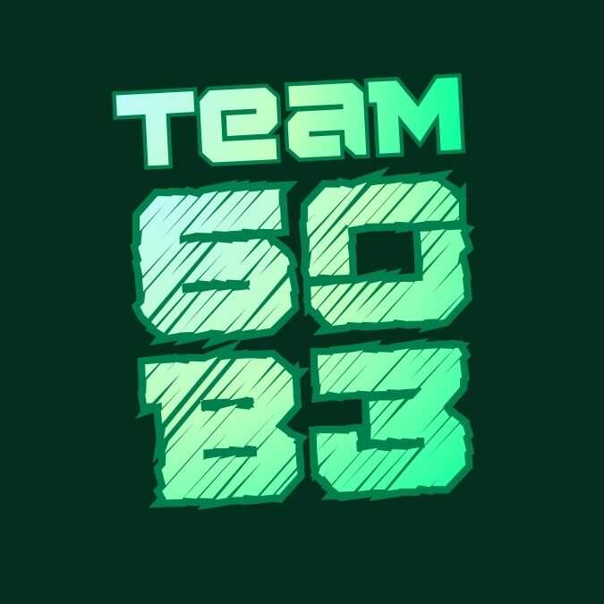
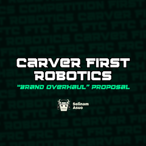

Welcome to
Selinam Asuo's
New World
Computer Engineering Major
User Experience & Interaction Design Minor
Drexel University
A Bit About Me
I'm Selinam (Seli), a student at Drexel majoring in Computer Engineering with a minor in User Experience & Interaction Design. My interests span computer hardware, software development, graphic design, video editing, and web design, and I especially enjoy projects that let me combine technical problem-solving with creative work.
My interest in computing grew from upgrading and experimenting with my own hardware, while my design experience developed through years of creating graphics and media for school organizations and personal projects. Outside of engineering and design, I enjoy video games like The Legend of Zelda and Super Smash Bros., as well as baking, cooking, and exploring my home city of Philadelphia.
Project Sampler
Here are a few projects I have worked on:
